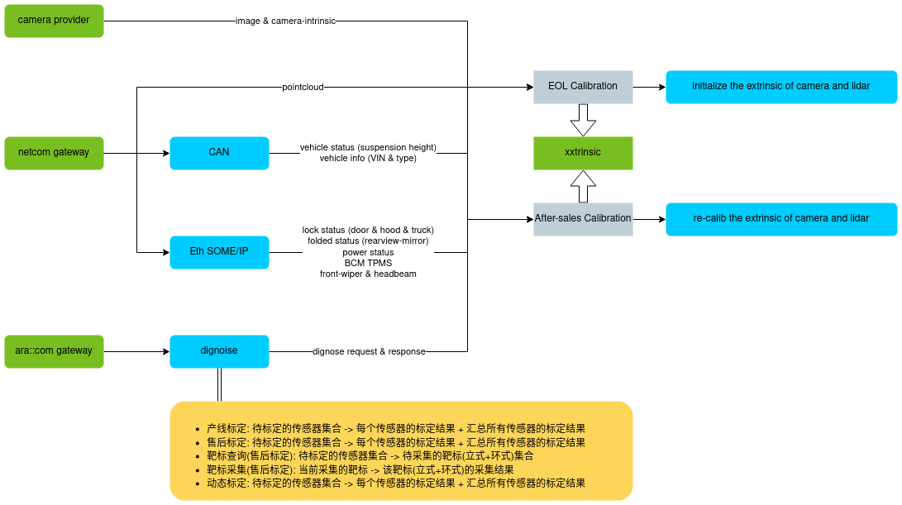
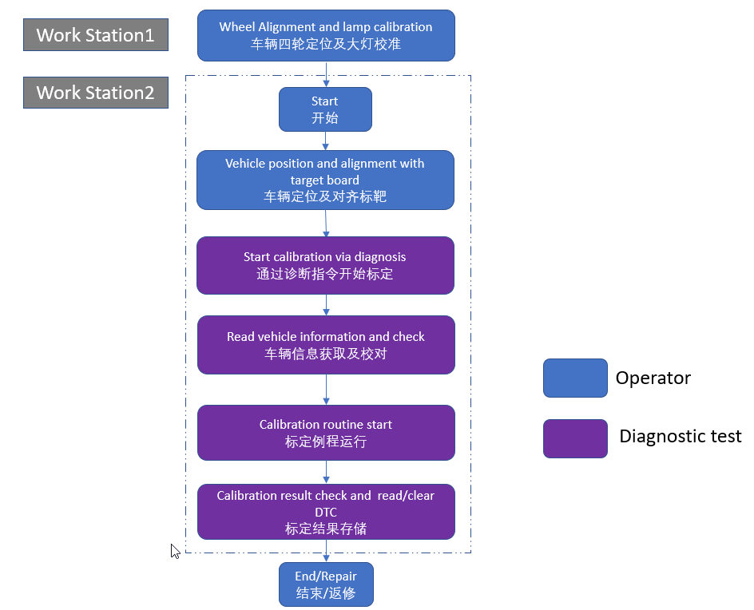
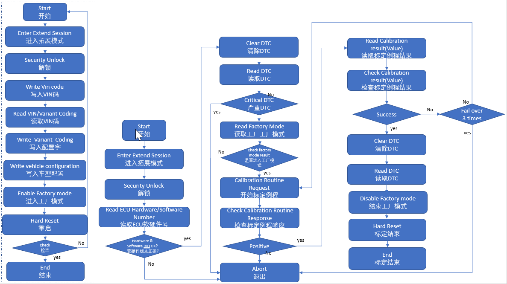
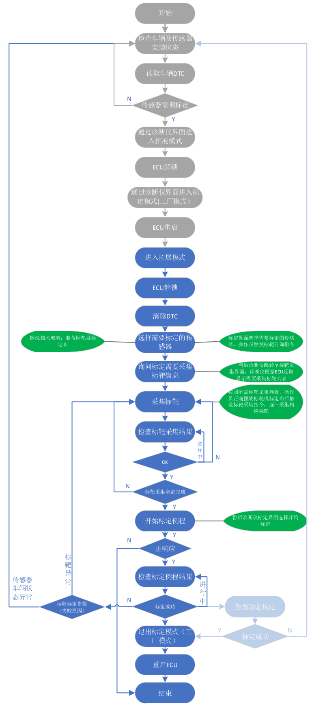
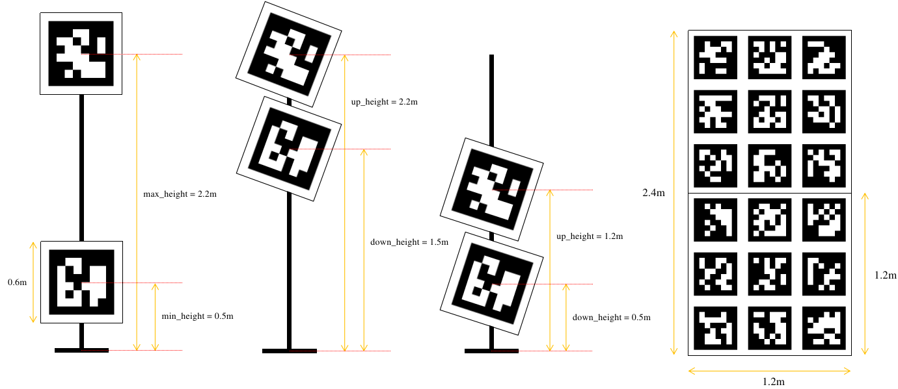
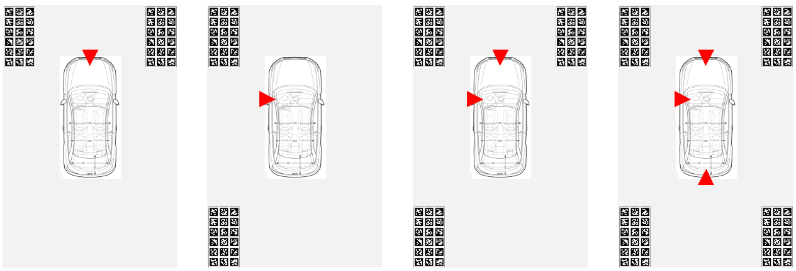
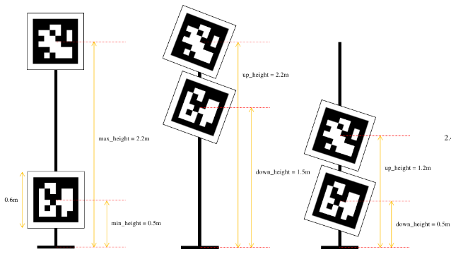
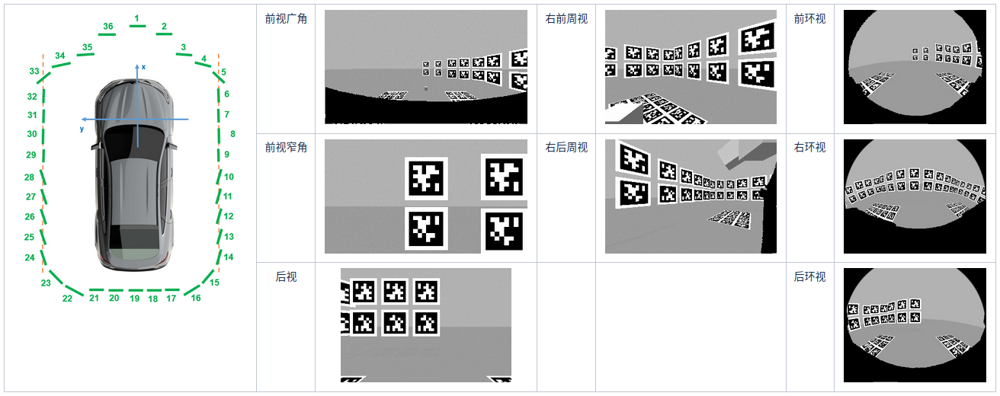

Offline Calibration Detail Design
functional module
|
|
EOL calibration |
after-sales calibration |
|
|
Solve the problem |
Calculation of vehicles offline |
Sensor changes or abnormal external governing |
|
|
Function description |
Initialized sensor external parameters |
Fix the calibration parameter (4S shop) |
|
|
Precautions |
Triggered by the diagnostic instrument |
Triggered by the diagnostic instrument |
|
|
|
|||
|
input Output |
 |
|
|
|
Related dependencies |
|
|
|
|
Run mode |
Factory mode |
|
|
|
Deployment |
You need to pass the original point cloud to the master end through Netcom |
|
|
pipeline
EOL calibration
 
after-sales calibration

EOL calibration
camera calibration algorithm
|
Input |
calib image + camera intrinsic + apriltag 3D groundtruth |
|
Output |
camera extrinsic |
|
Algorithm |
|

lidar calibration algorithm
|
Input |
Lidar Calib Data (add Gaussian noise) |
|
Output |
lidar extrinsic |
|
Algorithm |
|
after-sales Calibration
After -sales calibration equipment

surround-view-camera
Camera according to the need to calibrate the ring target at the corresponding position

(1) There is no need to see the same TAG in adjacent viewing. You only need to see the different parts of the same target.
(2) If there are multiple calibration boards, you can place it at one time; if there is only one calibration board, you can also place multiple frames for place
Algorithm description, The right picture above is an example ：
(1) Starting from the required calibration camera (right environment), according to its internal and external participation and calibration boards that are placed on the flat ground, it is estimated that the position of the two targets he sees (PNP) he sees
(2) According to the position of the two targets estimated, the chain recurs the initial location of the remaining surrounding cameras and targets (if the target position obtained according to the observation is obviously not on the ground, report an error))
(3) Calculate an optimization problem with ground constraints, and solve the external parameters of each target and to be treated by the standard.
Note: When the 4 -view camera needs to be calibrated after -sales, , Need to know the accurate location of a calibration board for the center of the rear axis of the vehicle
front/rear/side-view-camera
The overall thinking is the same as the after -sales calibration of the surrounding view. The camera that exists in the area with the camera to be determined to be determined to calibrate it.
Example: For example, if we need to mark the front week to view, we will use (1) to look at the wide -angle (2) front of the front (3) right environmental view
You need to mark which weekly camera, just place the target at the corresponding site in its FOV to perform data collection

The following is some of our preset positioning and simulation results of our vertical target

In the later improvement direction: For the large camera with a large FOV, we can put the scarcity of the target. For the small camera with a smaller FOV, the target is more dense
Because the X Y coordinates of each vertical target of 4S shoppers are too abstract, it is not easy to place accurately
So the following is the instruction cloth of the target places we planned to make.Because the overall overall is too large, we are divided into 4 parts, and the front axis of the vehicle is based on the stitching